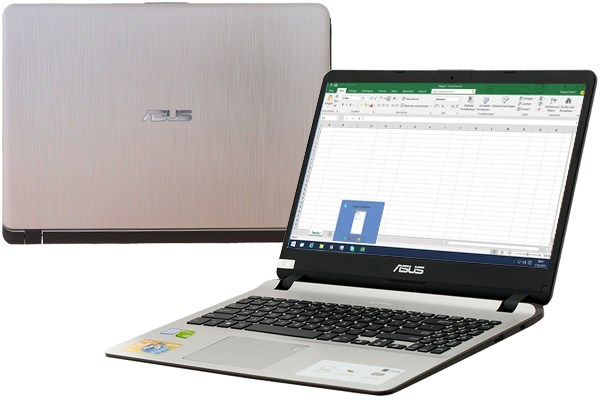

Laptop Asus VivoBook X507UB i7 8550U/4GB/1TB/2GB MX110/Win10 (BR354T)
Đặc điểm nổi bật của Asus VivoBook X507UB i7 8550U/4GB/1TB/2GB MX110/Win10 (BR354T)
Laptop ASUS Vivobook X507UB-BR354T được thiết kế trang nhã, trọng lượng nhẹ phù hợp cho việc di chuyển. Bên cạnh đó, cấu hình máy đáp ứng mượt mà các ứng dụng văn phòng lẫn các thao tác đồ họa.
Thiết kế di động tối ưu
Laptop ASUS Vivobook X507UB-BR354T với thiết kế thanh lịch, màu sắc máy trẻ trung, sang trọng, mỏng nhẹ trọng lượng 1.8 kg, độ dày 21.9 mm giúp bạn có thể làm việc và giải trí một cách hiệu quả ở bất cứ đâu.

Thông số kỹ thuật
CPU: Intel Core i7 Coffee Lake, 8550U, 1.80 GHz
RAM: 4 GB, DDR4 (2 khe), 2400 MHz
Ổ cứng: HDD: 1 TB SATA3, Hỗ trợ khe cắm SSD M.2 SATA3
Màn hình: 15.6 inch, HD (1366 x 768)
Card màn hình: Card đồ họa rời, NVIDIA GeForce MX110, 2GB
Cổng kết nối: 2 x USB 2.0, 2 x USB 3.0, HDMI
Hệ điều hành: Windows 10 Home SL
Thiết kế: Vỏ nhựa, PIN liền
Kích thước: Dày 21.9 mm, 1.8 kg
Thời điểm ra mắt: 2018